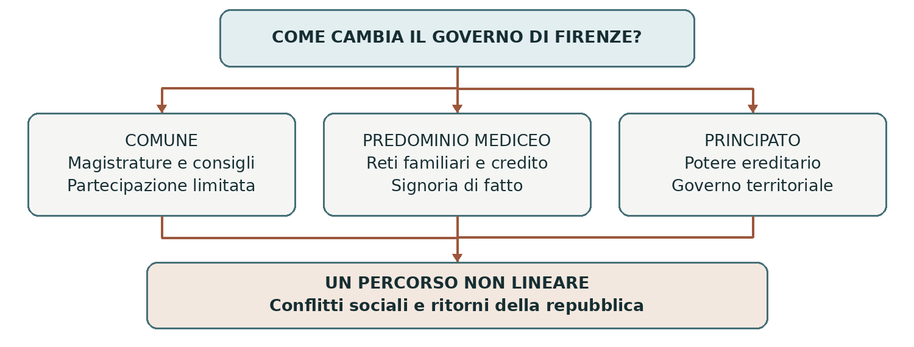

XII–XVI secolo • Un caso nella storia dei comuni italiani
Firenze dal comune al principato
Il comune medievale fu una forma di autogoverno cittadino, non una democrazia aperta a tutti. Firenze permette di seguirne le trasformazioni: il governo delle Arti, i conflitti sociali, il predominio informale dei Medici e infine il principato ereditario. Il percorso ebbe interruzioni e alternative reali.
0. Domanda generatrice
Come poté una città governata da magistrature repubblicane diventare uno Stato dinastico?
In sintesi Il cambiamento dipese da conflitti interni, concentrazione della ricchezza e interventi esterni. Le istituzioni potevano restare formalmente attive mentre il potere effettivo cambiava.
1. Il mondo precedente
Tra XI e XII secolo, in molte città dell’Italia centro-settentrionale, gruppi di cittadini organizzarono
magistrature e consigli per amministrare giustizia, difesa e finanze. Nacquero i comuni, che rivendicavano
autonomia rispetto a vescovi, signori e imperatore, pur negoziando spesso con questi poteri. Lo sviluppo
non fu uniforme e non coinvolse nello stesso modo tutta la penisola.
A Firenze famiglie aristocratiche, mercanti e proprietari parteciparono al primo governo comunale. La
crescita di manifatture tessili, commerci e credito ampliò il peso dei ceti organizzati nelle Arti, le
corporazioni professionali. La città estese inoltre il controllo sul contado: l’autonomia dei cittadini poteva
accompagnarsi alla subordinazione delle campagne.
In sintesi Il comune era una conquista politica di gruppi urbani, sostenuta da risorse economiche e dominio territoriale.
2. Le fratture
Le rivalità fra famiglie e fazioni, comprese quelle tra guelfi e ghibellini, rendevano instabile il governo. Per
contenere i conflitti molte città ricorsero a un podestà, spesso forestiero, dotato di competenze giudiziarie
e militari. A Firenze crebbe parallelamente il ruolo delle organizzazioni del “popolo”, che non
comprendevano indistintamente tutti gli abitanti.
Il priorato delle Arti del 1282 e gli Ordinamenti di giustizia del 1293, poi modificati nel 1295,
rafforzarono il governo dei ceti corporativi e limitarono l’accesso dei magnati alle cariche. Restavano
esclusi molti lavoratori salariati, le donne e gran parte degli abitanti delle campagne. L’ampliamento della
partecipazione non coincideva con il suffragio universale.
In sintesi Il governo passò attraverso nuovi gruppi e nuove regole, ma conservò limiti sociali e politici.
3. Attori, gruppi e conflitti
Le differenze economiche attraversavano la città e anche il mondo delle corporazioni.
| Attori | Obiettivi e interessi |
|---|---|
| Magnati e grandi famiglie | Difendono prestigio, patrimoni e influenza politica. |
| Arti maggiori e minori | Rappresentano mestieri e interessi differenti; mercanti e banchieri più ricchi hanno risorse maggiori. |
| Lavoratori salariati | Chiedono migliori condizioni e rappresentanza; molti non dispongono di una propria Arte. |
| Medici e loro sostenitori | Costruiscono consenso e controllo attraverso credito, relazioni e influenza sulle magistrature. |
| Potenze esterne | Papato, monarchia francese e imperatore intervengono nelle crisi fiorentine. |
In sintesi La storia istituzionale dipende anche da chi dispone dei mezzi per orientare elezioni, alleanze e decisioni.
4. Il processo storico
Il conflitto sociale e il governo oligarchico
Nel 1378 il tumulto dei Ciompi, lavoratori della lana privi di una propria corporazione, portò
temporaneamente nuovi gruppi al governo. L’esperimento non durò: la partecipazione più ampia fu
progressivamente smantellata e nel 1382 si consolidò una restaurazione oligarchica. Il conflitto mostra
quanto fosse contesa la definizione di “popolo”.
Nel Quattrocento Firenze era anche il centro di un dominio territoriale cresciuto attraverso conquiste e accordi, fra cui l’acquisizione di Pisa nel 1406. Guerre e spese pubbliche rafforzavano il peso dei gruppi capaci di fornire credito. Le istituzioni repubblicane restavano vitali, ma potevano essere orientate da reti familiari e finanziarie.
I Medici governano senza essere duchi
Nel 1434 Cosimo de’ Medici, detto il Vecchio, tornò dall’esilio e divenne il principale punto di
riferimento della politica cittadina. Non abolì formalmente la repubblica: controllò alleanze e meccanismi
di selezione delle cariche. Si parla perciò di signoria di fatto. In questo contesto “Signoria” indicava anche
il collegio dei priori: non va confuso automaticamente con il dominio di un unico signore.
Il predominio familiare proseguì, soprattutto con Lorenzo il Magnifico, ma incontrò opposizioni. Nel
1494 Piero de’ Medici fu cacciato e si aprì una fase repubblicana. Savonarola la influenzò nei primi anni,
fino alla condanna del 1498; la repubblica continuò oltre la sua morte. I Medici tornarono nel 1512.
Dalla crisi repubblicana al ducato
Una nuova repubblica nacque nel 1527, ma l’assedio sostenuto dalle forze imperiali e papali ne provocò la
caduta nel 1530. Nel 1532 la trasformazione istituzionale attribuì ad Alessandro de’ Medici un potere
ducale ereditario. Il mutamento non fu più soltanto controllo informale delle cariche: il principato acquistò
una struttura giuridica riconosciuta.
Dopo l’uccisione di Alessandro, nel 1537 divenne duca Cosimo I, appartenente a un altro ramo della
famiglia. Rafforzò l’amministrazione e ampliò lo Stato con Siena, conquistata nel 1555 e assegnata al suo
dominio nel 1557, salvo i presidi costieri spagnoli. Nel 1569 ottenne il titolo di granduca di Toscana.
Cosimo I non va confuso con Cosimo il Vecchio.
In sintesi Il predominio informale dei Medici precedette di un secolo la nascita del principato ereditario.
Lo snodo decisivo
Il 1434 e il 1532 segnano cambiamenti diversi: nel primo caso una famiglia domina entro forme repubblicane; nel secondo il governo dinastico diventa un ordinamento esplicito.
5. Le fonti in dialogo
Gli Uffizi come fonte sulla costruzione dello Stato
Dal 1560 Cosimo I affidò a Giorgio Vasari un edificio destinato a riunire magistrature e uffici. La sua funzione originaria è documentata dalle Gallerie degli Uffizi.
Contenuto — sintesi didattica: Il complesso raccolse attività amministrative e giudiziarie e fu collegato agli spazi della corte. L’organizzazione urbana rendeva visibile il coordinamento del governo sotto il principe.
Interpretazione e limiti: Un edificio documenta funzioni e rappresentazione del potere, ma non prova che l’amministrazione fosse uniforme né che tutti accettassero il dominio mediceo. Va confrontato con atti e vicende politiche.
Domanda di lettura: Perché riunire uffici vicino al centro del potere può avere un significato politico?
Fonte materiale e documentazione: Gallerie degli Uffizi — Storia
In sintesi L’architettura aiuta a leggere il passaggio dalle magistrature cittadine al governo del principe.
6. Conseguenze e nuovo assetto
La città divenne centro di uno Stato regionale dinastico. Le magistrature non sparirono tutte, ma furono inserite in un nuovo rapporto con il sovrano. Gli abitanti persero spazi di partecipazione repubblicana, mentre la corte e l’amministrazione assunsero un peso maggiore.
L’esperienza fiorentina non rappresenta il destino obbligato di ogni comune. Altre città mantennero ordinamenti repubblicani differenti. A Firenze le restaurazioni del 1494 e del 1527 dimostrano che il principato non era un esito già scritto nel Duecento.
In sintesi La trasformazione fu politica e territoriale, costruita attraverso crisi, scelte e rapporti di forza.
7. Conclusione
Firenze divenne un principato perché la concentrazione del potere familiare incontrò condizioni interne ed esterne favorevoli. La distinzione tra forma delle istituzioni e controllo effettivo permette di comprendere la lunga transizione.
Sintesi finale Il comune organizzò l’autogoverno di gruppi cittadini. Le Arti ampliarono la partecipazione senza renderla universale. I Ciompi mostrarono i limiti sociali della repubblica. Dal 1434 i Medici dominarono senza abolire subito le magistrature. Nel 1532 nacque il ducato; nel 1569 il granducato.
Per studiare e collegare
Coordinate essenziali
Firenze e il suo dominio toscano, dal comune del XII secolo al granducato del 1569. Collegamenti con la crescita dei comuni e le guerre d’Italia.
Saperi irrinunciabili
1. Il comune non era una democrazia universale.
2. Il contado era sottoposto al controllo della città.
3. Le Arti erano corporazioni di mestiere.
4. Il priorato delle Arti risale al 1282.
5. Gli Ordinamenti di giustizia limitarono i magnati.
6. I Ciompi si ribellarono nel 1378.
7. Cosimo il Vecchio dominò Firenze dal 1434.
8. La signoria di fatto conservava istituzioni repubblicane.
9. Le repubbliche tornarono nel 1494 e nel 1527.
10. Alessandro divenne duca nel 1532; Cosimo I granduca nel 1569.
Mappa concettuale

Le trasformazioni non cancellano tutte le istituzioni precedenti, ma ne modificano il funzionamento.
Strumenti e attività
Linea del tempo ragionata
| Quando | Che cosa cambia |
|---|---|
| XII secolo | Si consolida il comune fiorentino. |
| 1282–1293 | Priorato delle Arti e Ordinamenti di giustizia. |
| 1378–1382 | Ciompi, ampliamento temporaneo e ritorno oligarchico. |
| 1434 | Cosimo il Vecchio avvia il predominio mediceo. |
| 1494–1530 | Due fasi repubblicane, interrotte dal ritorno dei Medici. |
| 1532–1569 | Ducato di Firenze e successivo granducato di Toscana. |
Vocabolario essenziale
Comune. Organizzazione politica autonoma di una comunità cittadina.
Arte. Corporazione che regola un mestiere e rappresenta i suoi membri.
Contado. Territorio rurale sottoposto al controllo di una città.
Oligarchia. Governo concentrato in un gruppo ristretto.
Principato. Ordinamento dominato da un principe, spesso ereditario.
Attività di comprensione
1. Confronta comune, signoria di fatto e principato per accesso al potere.
2. Spiega perché Cosimo il Vecchio e Cosimo I non sono intercambiabili.
3. Usa due ritorni della repubblica per discutere l’idea di una transizione inevitabile.
Fonti e approfondimenti
Approfondimento di storia per la classe terza. Fonti e studi per verificare e ampliare la lettura.
Archivio di Stato di Firenze — Ordinamenti di giustizia
Treccani — Firenze
Treccani — Cosimo I